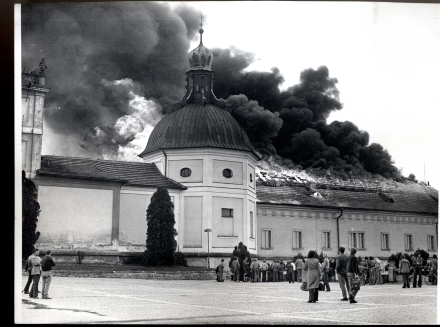
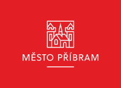
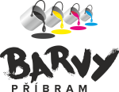
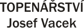
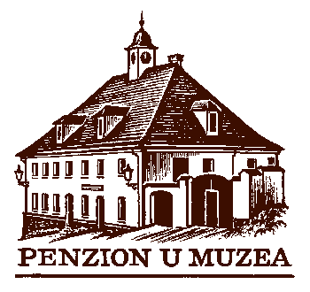
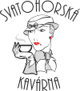
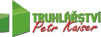

Běh hasičů do Svatohorských schodů
Dvojice hasičů v plné výstroji a s dýchacím přístrojem. 507 metrů, 80 metrů převýšení, cíl na Svaté Hoře.

Přihlášky na ročník 2026: 13. července – 24. srpna
Přihlášky přijímáme pouze on-line. Před odesláním si prosím pozorně přečtěte propozice soutěže.
Na vlastní kůži, v plné polní
Běh hasičů do Svatohorských schodů je unikátní závod dvojic hasičů v běhu do schodů na příbramskou dominantu – Svatou Horu.
Vzpomínáme tak na mohutný požár areálu z dubna 1978 a na vlastní kůži „v plné polní“ zkoušíme, jaké to asi mohlo být. Závod je perfektní sportovní a kulturní zážitek v jednom – stejný den totiž ožije Svatá Hora velkolepou Příbramskou svatohorskou šalmají.
- Datum12. září 2026
- MístoPříbram, Středočeský kraj
- PořadatelSbor dobrovolných hasičů Březové Hory
- Disciplínazávod dvojic hasičů s dýchacím přístrojem v běhu do schodů na Svatou Horu
- Kapacita75 dvojic
Podrobnější informace najdete v propozicích.

Z Dlouhé ulice na Svatou Horu
Start v Dlouhé ulici, cíl na nádvoří Svaté Hory. Krátké, ale nemilosrdné – nejprudší úsek má stoupání kolem 22 %.
Výškový profil trati (data Mapy.com).
Důležitá místa a GPS
Jak se přihlásit
Řádně vyplněné přihlášky přijímáme on-line od 13. července do 24. srpna 2026. Kapacita závodu je 75 dvojic.
Přečtěte si propozice
Pravidla, kategorie, povinná výstroj a časový harmonogram závodu.
PDF Propozice závodu 2026vydáno 8. července 2026Vyplňte přihlášku
Přihláška se podává za celou dvojici na přihlašovacím webu závodu.
Přihláška on-lineDorazte na start
V den závodu se hlaste na prezenci. Start je v Dlouhé ulici – parkujte na placeném parkovišti u Svaté Hory.
Mapa a GPSSledujte závod on-line
Průběžné výsledky běží v den závodu na live.sv-schody.cz, závod také vysíláme živě na YouTube.
Časomíra
Všechny ročníky
Výsledky, soupisky, fotografie a videa od nultého ročníku v roce 2007.
202618. ročník12. září 2026
202517. ročník13. září 2025
202416. ročník14. září 2024 · zrušeno
202315. ročník9. září 2023
202214. ročník10. září 2022
202113. ročník11. září 2021
202012. ročník12. září 2020
201911. ročník14. září 2019
201810. ročník8. září 2018
20179. ročník9. září 2017
20147. ročník13. září 2014
20136. ročník14. září 2013
20125. ročník22. září 2012
20114. ročník17. září 2011
20103. ročník18. září 2010
20092. ročník19. září 2009
20081. ročník27. září 2008
20070. ročník29. září 2007
Děkujeme
Bez podpory těchto firem, institucí a lidí by závod nebyl možný.

Město PříbramZáštita nad soutěží Dräger Safety s.r.o.Materiální zabezpečení Energo PříbramFinanční podpora FRP Services, s.r.o.Finanční podpora Halex-Schauenberg, ocelové konstrukce s.r.o.Finanční podpora Polycasa s.r.o.Finanční podpora Restaurace Na VršíčkuFinanční podpora
Barvy PříbramFinanční podpora PRORESTA, s.r.o.Finanční podpora CVP Galvanika s.r.o.Finanční podpora CykloProFinanční podpora
Josef Vacek – instalatérské a topenářské práceFinanční podpora LEŠENÍ Sýkora s.r.o.Pod Anenskou 245, Příbram IV · Finanční podpora
Penzion u muzeaFinanční podpora
Svatohorská kavárnaSvatohorská alej, Příbram · Finanční podporaU SimonyVinárna U SimonyMariánská 407, Příbram VI · Finanční podpora

TRUHLÁŘSTVÍ Petr Kaiser s. r. o.Finanční podporaPořadatel
Sbor dobrovolných hasičů Březové HoryNádvoří Msgr. Korejse
Příbram VI – Březové Hory
261 01